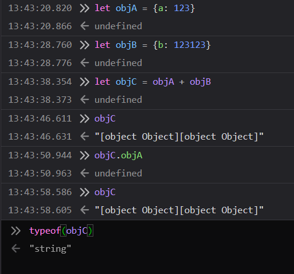
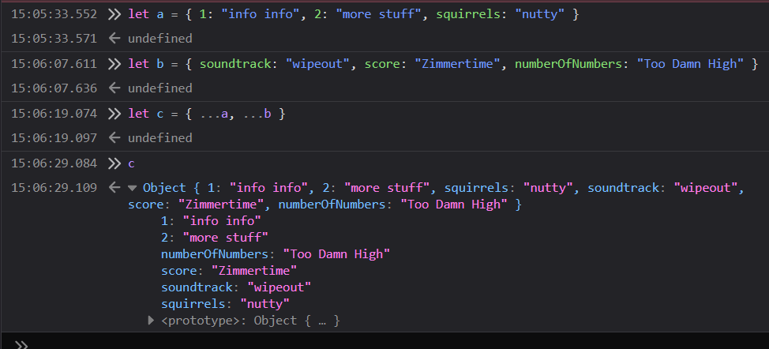

When I started in JS, I had a hard time combining objects. I tried obj a + obj b -- this made no sense to the compiler.
As you can see, the browser JS returns it as a string (the typeof entry).
To add two objects together, we need to take all the properties of one object and spread them into another object. For this purpose, we have the spread operator.
The spread operator is an elipsis (the "..." symbol). You put it in front of an object (or an array), and it causes the function to go into the spread object and take its properties. In this way, you can deconstruct an object and use its values directly for another object.
Note that the properties of object C are sorted numerically and then alphabetically.